GAMES101笔记
2021年初有幸学习了闫令琪老师的《GAMES101：现代计算机图形学入门》，其论坛链接如下：
学习过程中与女朋友记录了一些课程笔记，分享在此，希望能够跟有同样爱好的朋友一起学习进步
预备知识（部分）
线性代数
$ \begin{split}
&||\vec u||=||\vec v||=||\vec w||\\
&\vec{u}\cdot \vec{v}=\vec{u}\cdot \vec{w}=\vec{u}\cdot \vec{w}=0\\
&\vec{w}=\vec{u}\times \vec{v}(right-handed)\\
&\vec{p}=(\vec{p}\cdot \vec{u})\vec{u}+(\vec{p}\cdot \vec{v})\vec{v}+(\vec{p}\cdot \vec{w})\vec{w}(作投影)
\end{split} $
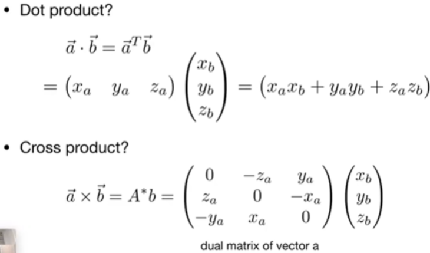
齐次坐标
2D point = $ (x,y,1)^T $
2D vector = $(x,y,0)^T$
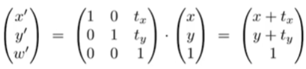
所有的仿射变换(线性变换+平移)都可以写作齐次坐标的形式
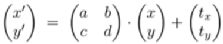
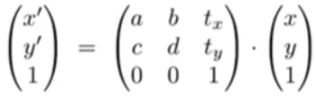
且齐次坐标表示的变换矩阵最后一行一定是0,0,1，右侧n-1项各项为平移项，其余部分为之前的线性变换矩阵，三维场景中类比可得齐次变换矩阵先做线性变换再做平移
Rodrigues’ Rotation Formula
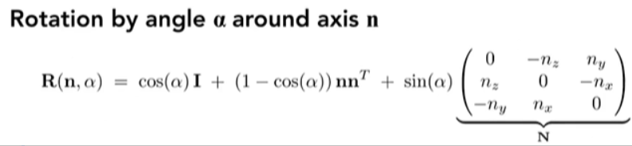
推导：
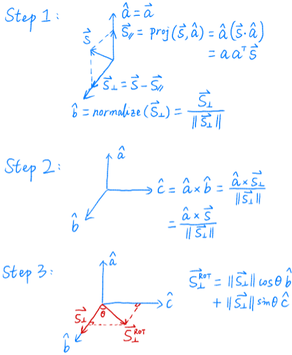
坐标变换 - MVP

Model Transform：模型变换
放置模型物体位置
View Transform：视图变换
放置相机位置以及朝向，同时定义相机的向上方向，一般放置在原点，向-z方向看，向上方向是y。
移动相机时，我们需要先平移再旋转，因为将不规则位置旋转规则化位置比较困难，考虑从规则化的位置旋转当前相机位置，得到我们所需要的旋转矩阵的逆矩阵，又因为旋转矩阵的正交性，所以我们所求的矩阵即为逆矩阵的转置
Projection：投影
即将3D中的物体投影到2D屏幕上，根据是否体现近大远小又分为：
Orthographic projection（正交投影）
放置好相机后，将z轴忽略，同时再将图象映射到$[-1,1]^3$的规范，正则（canonical）正方形里，具体的做法是将其中心移到原点处，再进行放缩
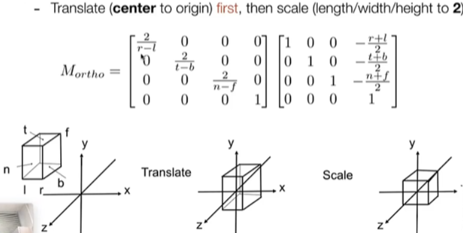
Perspeerective projection（透视投影）
将远平面上的点挤压成近平面的大小，再运用正交投影，所以透视投影的问题即转化为将远平面上的点如何挤压成近平面大小，我们规定近平面上的点永远不变，远平面在挤压时z值不变，远平面的中心点在挤压时不变

根据相似三角形，可得关系：$y’=\frac{n}{z}y$，$x’=\frac{n}{z}x$
将x’,y’代入(x’,y’,z’,1)中，齐次坐标转换变为$(x,y,z,1)^T\Rightarrow (nx/z,ny/z,unknown,1)^T$，右侧同乘z得$(nx,ny,still\ unknown,z)^T$

因此可以得到投影矩阵中的三行信息，未知量仅有四个


又因为在近平面上的点永远不变，远平面上的点z值永远不变，通过这两个条件得到等式
①由于近平面上的点永远不变，所以将z替换为n得：

因为n^2与x，y无关，从而知道了第三行前两个未知量为0
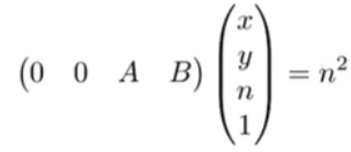
根据近平面得到的结果可以得到如下关系$An+B=n^2$

②远平面上的中心点位置不变，远平面上的z值不变，可以得到如下关系：$Af+B=f^2$

联立得：

定义一个视锥只需要定义长宽比和可视角度

Rasterization（光栅化）

光栅化即是将物体呈现在屏幕上，我们将屏幕看成是像素的数组，且将每一个像素默认它只有一种颜色，由RGB来定义
Viewport transform：视口变换
我们将MVP变换之后的$[-1,1]^3$正方体的x，y拉伸为屏幕大小，忽略z轴，再将其一角移动到原点，使整个屏幕显示在坐标轴第一象限
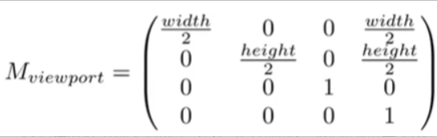
成像设备：
早期：示波器 采用Raster Scan（隔行扫描）方式，隔行显示图象，由于人眼的视觉滞留原因，呈现的仍为完整画面，而工作量减半了，当前还在一些视频压缩中使用，但是会造成画面撕裂。
CRT（Cathode Ray Tube）电子通过磁场分布在屏幕上
LCD（Liquid Crystal Display）光通过光栅之后发生扭曲，振动方向与光栅一致
LED（Light Emitting diode），Electrophoretic Display（例如kindle，刷新率低）
Sampling：采样
三角形是最基础的多边形，任何其他多边形都能拆成若干个三角形，三角形的内部一定是平面的，定义非常的清晰，只要定义三个顶点，其内部可以插值计算
将一个函数离散化的过程
判断每一个像素的中心是否在三角形内，方法即是使用沿着三角形的三条边，计算三次叉乘，来判断像素中心是否在三角形内，若在边界上则自己处理，不硬性规定
我们只需要对轴向包围盒（AABB）内的像素点进行判断
Sampling Artifacts
走样（Aliasing）现象
锯齿（Jaggies）- 空间中的采样
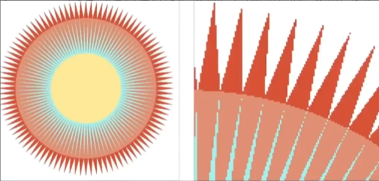
摩尔纹（Moire）- 图片欠采样
车轮效应（Wagon wheel effect） - 时间中的采样
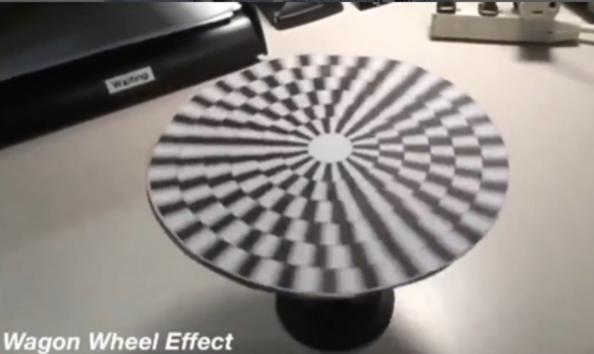
本质都是因为信号变换太快，导致采样频率跟不上
同样一种采样频率，采样不同的函数，无法区分，导致走样
Antialiasing：反走样
Filtering（滤波）：将信号某一区间的频率过滤掉
傅里叶变换能将一张图片从时域变换到频域，频域的中心为低频，边缘为高频，一般图片低频信号要远多于高频信号。
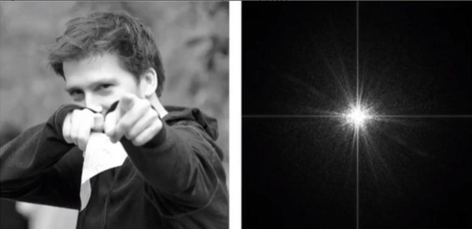
我们可以在频域图中看到明显的十字，这是因为我们一般处理信号时将其视为周期性重复的信号，而图片一般情况下无重复，因为我们认为图片的左边界往外连接着右边界，即图片也是重复的，有无限多个，而左右边界一般差别较大，会有较大的信号变化。
高通滤波器，高频信息表示图像中出现较强的变化，即呈现图象中的轮廓边缘
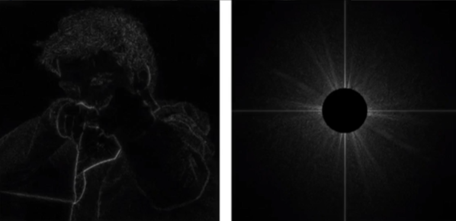
低通滤波器，低频信息表示图像中不明显的边界特正，即图象的模糊显示
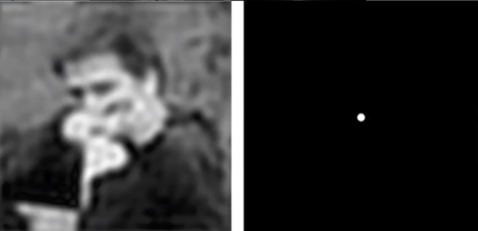
Convolution（卷积）：图形学中的卷积我们简化为运用不同的权重计算相邻信号的加权平均

Convolution Theorem（卷积定理）：时域上两个图象的卷积等于频域上其两者的乘积
Box Filter（低通滤波器），当卷积盒的大小越大时，在频域上频率越低，即过滤后的图象越模糊


Sampling = Repeating Frequency Contents
从频率的角度来说，采样就是在不断重复频域上的内容

所以走样发生的原因就是，采样的频率不够快，导致原始信号和复制的信号发生了混叠

①增加采样率
实质上增加了傅立叶域中样本之间的距离高分辨率显示器、传感器、帧缓冲器但是成本高且可能需要非常高的分辨率
②先模糊再采样
先模糊再采样，对应在频率上来说，即用低通滤波器去除原信号的高频信号，使频谱图覆盖的面积减小，从而避免混叠

一般采用1-pixel-width box filter，即每一个像素单元求其平均，从而达到模糊的效果
像素求平均的方法
ⅠMSAA(MultiSampling Anti-Aliasing)：将一个像素视作划分成许多小的块，每一个小的块来判断是否在三角形内，再将这些小的块平均起来，即得到对于该像素区域的平均近似，注意并未提高分辨率，花销是计算了更多的采样点


ⅡFXAA（Fast Approximate AA）：先得到一个有锯齿的图象，通过图像匹配找到有锯齿的边界，再更换为无锯齿的边界
ⅢTAA（Temporal AA）：复用上一帧的每个像素的值，即将MSAA的样本分布在时间上，并且当前这一帧没有引入任何新的计算量
详细反走样方法可看：
超分辨率/超采样
从低分辨率到高分辨率
本质上还是“样本不足”的问题
可以采用DLSS(Deep Learning Super Sampling)，将不知道的部分猜出来
Z-Buffer（深度缓存）
Painter’s Algorithm 油画算法
先将最远处的物体光栅化，然后由远到近依次光栅化
问题：当在深度上存在互相遮挡，无法确定层次

Z-Buffer
为了方便理解，此处的深度我们默认为物体到摄像机的距离，即深度越小离摄像机越近
同时生成两张图：frame buffer（最终的结果图象）和depth buffer（深度图）
初始时，初始化深度图，所有的深度都是无限远的，之后将任意三角形覆盖到任意像素上，计算该像素点的深度，若该点的深度小于深度缓存中该点的深度，则将深度缓存中该点的深度更新为较小的值，该算法的时间复杂度为O（n）（n个三角形，每个三角形覆盖常数个像素），该算法的正确性与遍历三角形的顺序没有关系

Shading（着色）

着色会引入明暗和颜色的不同，对不同的物体应用不同的材质，着色具有局部性，只考虑该物体，不考虑其他任何物体的存在，所以不生成阴影
Blinn-Phong Reflectance Model（布林-冯反射模型）

Diffuse Reflection（漫反射）
Lambert’s cosine law（兰伯特余弦定理）max(0,n·l),单位面积接收到的光强为直射光强乘以夹角余弦值，而夹角余弦值为平面法向量与入射向量的点乘，当两者夹角大于90°，即从物体背面照射时，对正面不产生影响，故取0

我们假设光线能量的传播没有损失，假设初始的能量强度为I，又随着不断传播，光能所在的球体半径不断增大，而球体表面积为$4\pi r^2$，即一个距离光源距离为r的点，它到达的光强为$I/r^2$

所以漫反射最终的光照强度为：
$L_d = K_d(I/r^2)max(0,n·l)$（Kd为漫反射系数）

漫反射从任何一个角度观察得到的结果都是一致的
Specular Term（高光反射）
高光反射出现的原因是因为观测方向和镜面反射反向足够接近

在Blinn-Phong模型中，即法线与半程向量足够接近，就可观测到镜面反射，而半程向量即将入射向量与观测向量相加后归一化
则$L_s = K_s(I/r^2)max(0.cos\alpha)^p = K_s(I/r^2)max(0,n·h)^p$,其中Ks为高光反射系数

而其中的余弦值部分由于容忍度太高，导致角度较大时，仍处于一个高光的范围，所以需要加上一个指数p来限制高光的范围，一般p取100-200左右

Ambient Term（环境光照）
因为环境光的生成非常的复杂，所以我们假设场景中的任何一个点受到环境光的强度都是相同的，为$I_a$，而$K_a$为环境光系数，得到$L_a=K_aI_a$，因为每一个点的环境光都一致，所以环境光实际上为一常数，其作用是保证场景中没有点完全是黑的

最后，我们三种光照相加在一起，即为完整的Blinn-Phong反射模型
$L = L_a+L_d+L_s = K_aI_a + K_d(I/r^2)max(0,n·l) + K_s(I/r^2)max(0,n·l)^p$

Shading Frequencies（着色频率）
Flat Shading（平面着色）
以每一个三角形平面为单位，计算每一个平面的法线，然后计算出着色结果

Gouraud Shading（高氏着色）**
以每个顶点为单位，计算出每一个顶点的法线，然后进行顶点着色，中间运用插值计算

Phong Shading（冯氏着色）
以每个像素为单位，计算出每一个像素的法线，然后进行像素着色


顶点的法线计算
当物体为球体时，顶点法线即为球心与其连线，当物体为不规则物体时，则顶点法线为其相邻四个面的法线的平均，可以通过根据面的面积来求加权平均，以获得更好的法线

实时渲染管线
我们的输入是一端三维空间中的点，通过MVP投影，投影到2D屏幕中，之后这些点会形成三角形，之后通过光栅化来将三角形离散化为许多像素，之后进行着色，显示


可以看到着色同时可以发生在顶点操作和像素操作上，这取决于着色频率，而Shader则是控制顶点和像素如何着色的可编程部分，在Shader中你只需要管其中的一个顶点或者像素如何着色，之后所有的顶点或者像素都会同样操作，VertexShader（顶点着色器），PixelShader（像素着色器）
Shader是一个通用的程序，描述单个顶点或像素上的操作，shader函数每个像素执行一次，在当前像素的屏幕样本位置输出表面的颜色，下面的shader执行纹理查找以获取此时表面的材质颜色，然后执行漫反射照明计算
1 | uniform sampler2D myTexture; |
Texture Mapping（纹理映射）
纹理映射的根本作用是定义物体不同点的基本属性

任何一个三维物体的表面都是二维的，纹理映射即将空间物体上的一个三角形射到纹理表面上，而纹理的坐标一般采用u-v来表示，两者都∈[0,1]，不同的位置可以使用相同的纹理
Barycentric Coordinates（重心坐标）
三角形平面内任意点都可以用A,B,C的线性组合来表示：
$(x,y)=\alpha A+\beta B+\gamma C(\alpha + \beta + \gamma = 1)$
若该点在三角形内，还需满足α，β，γ都非负

其中的三个系数可以用面积计算得到

三角形的重心即为下面表达式


在三维中的属性，要在三维空间中做插值，再投影到二维空间去
根据插值获得三角形上每一点的坐标（u,v），去纹理上查询该坐标的值，该值即为漫反射的系数$K_d$
Texture Magnification
①当一个高分辨率的物体，贴上一个低分辨率的纹理时，对于墙上的任意一个点，我们都可以找到纹理上对应的位置，即texel（纹理元素），但是该位置对应的值不是一个整数，所以需要采用新的插值算法
Bilinear interpolation（双线性插值）
取对应位置相邻的4个texel
线性插值:$lerp(x,v_0,u_0)=v_0+x(v_1-v_0)$
先做两次线性插值得到两个点的值：
$u_0=lerp(s,u_{00},u_{10})$
$v_0=lerp(s,v_{01},v_{11})$
再将得到的两个点再次插值：
$f(x,y)=lerp(t,u_0,v_0)$

Bicubic interpolation
取对应位置相邻的16个texel
②当一个低分辨率的物体，贴上高分辨率的纹理时，会产生严重的锯齿，发生走样


近处的像素覆盖的纹理区域较小，远处的像素覆盖的纹理区域较大，我们用大片面积的平均值来表示该像素的纹理显然会出现问题，一种方法是采用SuperSampling的方法，可以解决问题，但是会造成额外的大量性能消耗
我们可以换一个思路，不采取采样的方法，利用Mipmap来迅速求一个区域内的平均值
Mipmap
可以且仅可以做近似地，正方形的范围查询
在渲染之前，先生成对应的mipmap，共有$log_2(n)$个（分辨率为n*n），共引入了额外的1/3的存储量


将三角形中像素点对应找到纹理上的位置，同时找到该点相邻上方和右方的点的对应位置，从而得到一个纹理坐标上的三个点，计算两条边长，取最长的一条边，以第一个像素点为中心，最长的边长度为边长，将该像素点移动导致纹理坐标的改变近似到这个正方形区域内，我们就可以在第$log_2(L)$层mipmap上去进行双线性插值查询其近似值。当我们查询的位置并不是整数层，则可以在相邻的两层再次进行一次插值，即进行一次三线性插值

但是mipmap近似一个非正方形的区域平均值，会出现overblur（过度模糊）

这是我们可以采用Anisotropic Filtering
Anisotropic Filtering（各向异性过滤）
分为竖直和水平两个方向进行压缩，开销变为原本的三倍

因为每一个像素对应到纹理坐标上，不一定是一个标准的形状，各向异性过滤可以帮助去近似查询一个矩形区域平均值

EWA filtering用椭圆来近似估计，但是需要多次计算

Environment Map（环境光照）
纹理可以用来表示环境光，来投影到物体上作为环境光，效果要好于点光源

我们都假设环境光来源于无穷远处，因此我们只需记录它的方向信息，没有实际的深度意义，为了记录不同方向上的光线信息，可以采用不同的方式来保存环境光照
Spherical Environment Map（球面环境光照）

我们可以将环境光保存在一个球体上，并且把它展开，但是它并不是一种均匀描述，会出现扭曲的现象
Cube Map

将光照投影到正方体的六个表面，因为它六个面都是均匀的，很少发生扭曲，但是因为有六个面，我们需要先计算出光线在哪个面上
Bump Maping（凹凸贴图）
对于凹凸不平的物体，我们可以采用凹凸贴图来进行着色，通过对任何一个像素的法线进行扰动，纹理定义不同位置的相对高度，从而改变法线分布，而不需要在几何形体上改变物体

Displacement mapping（位移贴图）
跟凹凸贴图类似，但是在实际上改变了三角形顶点的位置，但是它需要三角形的模型比较细致，才能够捕捉纹理的变化，不然同样会出现走样，在DirectX中，我们先采用较为粗糙的三角形模型，在进行位移贴图计算时，如果发现三角形不够细致，再将三角形模型拆分成若干个小的三角形，细化模型
纹理还有很多其他的作用，比如制作一个3D纹理，从而可以看到物体内部的样子。再比如我们可以先进行环境光遮蔽等一系列原本在渲染时计算的东西，将其修改在纹理上，从而减小渲染时的性能消耗
Geometry（几何）

1.隐式几何
在并不给实际点的情况下，通过x,y,z之间需要满足的关系来表示几何形体
CSG(实体几何构造)
用已知常用的几何图形，进行并交补等运算，得到新的几何图形

SDF（有号距离函数）
我们计算空间中的每一个点距离几何形体的最近距离，并且得到一个对应的距离函数

LSM（水平集）
将SDF中等距离的所有点连接在一起，即形成了水平集，其中距离为0的所有点的集合即为该几何物体的几何形体

Fractals（分形）
与自身形体相似的物体不断重复

Pros&Cons
Pros:
紧凑的描述（例如，一个函数）
某些查询很容易（是否在对象内部，到表面的距离）
适用于光线到表面的相交（稍后会详细介绍）
对于简单的形状，准确描述/无抽样误差
易于处理拓扑变化（例如流体）
Cons:
难以建模复杂的形状
2.显示几何
直接将点的坐标以某种形式表示
Point Cloud（点云）
通过大量的点堆叠成相应的几何模型

Polygon Mesh（多边形面）
用三角形或多边形面组成几何物体

The Wavefront Object File Formate:
常用于图形研究，是一个指定顶点、法线、纹理坐标及其连接的文本文件
Bezier curves(贝塞尔曲线)
贝塞尔曲线利用一系列控制点来定义一条曲线。
贝塞尔曲线的第一个点为曲线起始点，前两个点决定了曲线起始点位置的切线方向，最后一个点为曲线的结束点，后两个点决定了曲线结束位置的切线方向

在$b_0b_1，b_1b_2$上各取一点，分别为$b’$和$b’’$，在$b’b’’$上取一点$b’’’$
其中$b_0b’ ：b’b_1 = b_1b’’ : b’’b_2 = b’b’’’ : b’’’b’’$
让$b’$和$b’’$在相应线段上移动，取得的$b’’’$的点集即为所求曲线
$\begin{split}
&b_0^1(t)=(1-t)b_0+tb_1\\
&b_1^1(t)=(1-t)b_1+tb_2\\
&b_0^2(t)=(1-t)b_0^1+tb_1^1\\
&b_0^2(t)=(1-t)^2b_0+2t(1-t)b_1+t^2b_2
\end{split}$

四个点同理

通过定义一系列与时间有关的多项式来对不同的控制点进行插值，计算出曲线上新的点

贝塞尔曲线有以下几个性质：
对于cubic bezier(四个控制点的贝塞尔曲线)$b(0)=b_0;b(1)=b_3$
对于cubic bezier$b’(0)=3(b_1-b_0);b’(1)=3(b_3-b_2)$对贝塞尔曲线做仿射变换与对贝塞尔曲线的控制点做仿射变换后再画出对应贝塞尔曲线得到的结果一致
贝塞尔曲线不会超出给点控制点所形成的凸包的范围

Piecewise Bezier Curves

C0连续，两段贝塞尔曲线连接在一起即为C0连续

C1连续，两段贝塞尔曲线的连接处的三个控制点在同一条直线上，且长度相等

Spline（样条曲线）
一种可控的曲线


其具有局部性，修改其中任意一个控制点，只会修改部分曲线段
Bezier Surface（贝塞尔曲面）
画出多根贝塞尔曲线后，以贝塞尔去线上的点作为新的控制点，绘制新的贝塞尔曲线，其贝塞尔曲线的集合即为贝塞尔曲面，通常运用[0,1]上的u,v坐标来表示贝塞尔曲面上的点

Mesh subdivision
将三角形网格拆分为更细致的三角形

Loop Subdivision
在Loop细分的过程中，可以连接一个三角形三条边上的三个中点，即从一个三角形细化为四个三角形

之后我们需要调整增加三角形后的顶点调整，对于新增的顶点，将两个三角形重合的边的两个点设为A,B，另外两个点设为C,D，将新增的顶点设置为$\frac{3}{8}(A+B)+\frac{1}{8}(C+D)$

对于旧的顶点，我们既要考虑其本身，也要考虑与其相连的旧顶点，其中，n为该顶点的度（即与该顶点相连的边的数量），u为与n相关的一个数，根据n和u，可以得到新顶点的位置调整

Catmull-Clark Subdivision
找出网格中的非四边形面，并取非四边形面各边的中点与非四边形面中点进行连接，从而将非四边形面化为四边形面，而在进行一次Catmull-Clark细分之后，网格会增加非四边形数个奇异点（即度不为4的点），之后再进行细分，将不再增加奇异点

Catmull-Clark细分之后的顶点调整，分为三类，如下图所示

两种细分的差异：Loop细分只能用作三角形网格，而Catmull-Clark细分可以用作各种类型的网格

Mesh simplification
将网格简化，用更少的格子表示

我们采用边坍缩来实现化简

如下图所示的五个点，若想将其简化为三个点，我们需要引入二次误差度量的概念，即新的替代点到之前的四条边的距离的平方和最小，我们在进行简化时，计算坍缩每一条边的二次误差度量，然后从小到大依次进行坍缩。要注意的是每坍缩一条边，要重新计算与其连接的边的二次误差度量， 所以需要一个数据结构来进行对数据的实时修改，并方便地获取最小值，因此采用优先队列，或堆来实现。因此整个算法就是坍缩二次误差度量最小的边，再对数据进行更新，再坍缩当前最小的边，再更新……即贪心算法

Mesh regularization
将网格规则化，化成大小相似的多边形
Ray Tracing（光线追踪）

光栅化的问题：
- 难以实现一些全局的效果
- （软）阴影
- glossy 反射
- 间接光照（光线在进入人眼前不止弹射一次）
- 多用于实时渲染（光线追踪多用于离线渲染）
图形学中光的三个约定：
- 光沿直线传播
- 光穿过物体时不发生碰撞
- 光经过若干次的反射和折射，最终会进入人眼（reciprocity光路的可逆性）
判断一个像素点的颜色：
- 从摄像机出发，与该像素点进行连线，得到直线与场景中的物体所相交的第一个点（其后相交的点不考虑）
- 再由光源出发，看是否能照射到该点
- 若能，则将该点的颜色经过计算，赋值给该像素点

Shadow Mapping
是一种图像空间的算法，并不需要知道场景的几何信息，但是会出现走样现象
核心：不在阴影中的点必须同时被摄像机和光线同时看到
首先，从光源看向场景，并记录下所能看到的物体的深度


然后我们通过摄像机来看场景，所能看到的每个点再投影回光源位置，查看光源处记录的该方向上的深度，并计算该点到光源的深度，比较两者是否相同，如果相同，则该点可见，若不相同，则该点处在阴影中
阴影可以分为软阴影和硬阴影，当一个点完全看不到光源，则为硬阴影，若只能见到一部分光源，则为软阴影，点光源一定不会出现软阴影，因为软阴影一定是因为光源有一点的大小，导致存在半影的现象

Whitted-Style ray tracing
光线在场景中会出现多次的折射与反射，在每一个反射或者折射的点处，都与光源连接一条线，若光源能够直接照射到该点，则该点的颜色则应该按照一定的权重（根据能量损失等来计算）来加权计算该像素点的颜色

定义一条光线：
- 起始点o
- 方向向量d

光线与球体相交
光线方程：
球体方程：
怎么求交点？交点满足两个方程，只要将其联立即可求解。


光线与隐式表面相交

计算光线与物体相交的用法：
- 可以用来计算阴影，光照等等
- 可以判断一个点是否在物体内部，原理如下：任意一封闭的曲线，在该平面内任意取一点，向任意方向发射一条光线，若与该曲线的交点为奇数个，则说明该点在封闭曲线内部，若为偶数个，则在封闭曲线外部

光线与三角形相交
判断一个光线是否一个三角形相交：
- 求光线与该三角形所在平面的交点
- 再判断这个点是否在三角形内（计算方法如前）

平面的表示：
- 点P
- 法向量N
- 平面上的点: $p:(p-p’) \cdot N = 0$（平面上任意一个线段与法线垂直），可展开为$ax+by+cz+d=0$

将光线的方程与平面的方程联立（代入），求交点t（需要检查t的范围）

Moller Trumbore Algorithm
将三角形所在面上的点用重心坐标来表示（用三角形三个顶点P0,P1,P2表示，系数和为1且大于0则点在三角形内部），与光线方程联立
计算t，b1，b2，若1-b1-b2，b1，b2都大于0，则该光线与该三角形相交

Bounding Volumes
用包围盒将物体包裹起来，若光线与包围盒都没有相交，则不可能与物体相交；相交时，再一一判断内部的物体是否与光线相交
以此提升光追效率，加速结构
包围盒如：球、长方体

Axis-Aligned Bounding Box(AABB，轴对齐包围盒)
轴对齐包围盒即每个面都与坐标轴组成的面平行

以2D举例，将长方体的包围盒分为两个对面（slab），分别计算光线进入两个对面的点(Tmin)和离开对面的点(Tmax)，之后取Tenter=max{tmin}，Texit=min{tmax}，作为光线与包围盒的交点。
如果tenter < texit，说明光线应该是在包围盒中停留了。
同理可扩展到3D。

但是光线并不是一条直线，而是一条射线
- 当Texit < 0 时，包围盒处于光线的后方，不存在交点
- 当Texit >= 0 并且 Tenter < 0 ，光源本来就在包围盒中，存在交点
- 所以，当且仅当 Tenter < Texit && Texit >= 0时，光线与包围盒相交
包围盒网格化
我们在创建一个包围盒后，将其网格化，找出其中物体覆盖的网格并将其标记

将光线经过的格子遍历，若格子是包围盒（的一部分），测试其中的物体与光线是否相交

为了保证效果和效率，格子的经验值满足下式

三种空间划分的方法
Oct-Tree
八叉树，将3D空间中的场景切三刀分为八份（例子中为2D平面），终止条件自己设置
KD-Tree
类似于二叉树，每一次划分用一刀将场景分为两份
结构：
- 内部节点
- 划分轴
- 划分位置
- 子节点
- 叶子节点
- objects
当光线照射包围盒时，我们根据KD-Tree的划分，可以类似于二分查找的思想，对碰撞的物体进行查找，但是KD-Tree存在问题，即一个物体存在多个划分后的包围盒内
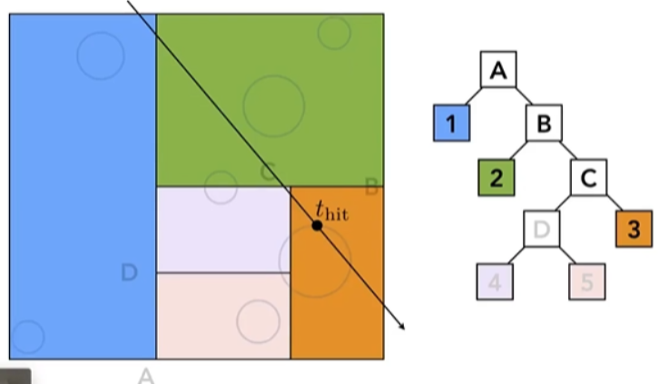
BSP-Tree
类似KD-Tree，但是划分可以为斜线
Bounding Volume Hierarchy(BVH)
避免了一个几何结构出现在多个叶子节点里的问题，但是它并不是严格地将物体划分开

先找到包围盒，然后将场景中的物体划分为两部分，在分别计算两部分地包围盒，之后继续重复之前的操作，直到可以停止为止

如何划分一个节点：我们总是选择最长的轴进行划分，并且优先选取中间的物体
结构：
- 内部节点
- 包围盒
- 指向子节点的指针
- 叶子节点
- objects
- 包围盒

光线与BVH求交算法：（伪代码）

Radiometry（辐射度量学）
measurement system and units for illumination准确的衡量光在空间中的特性
Radiant energy and flux
radiant energy:
- the energy of electromagnetic radiation
- measured in units of joules
- denoted by Q [J=Joule]
radiant flux(power):
- energy emitted, reflected, transmitted or received, per unit time
- denoted by $\Phi \equiv \frac{dQ}{dt}$(W=Watt)(lm=lumen)
Radiant intensity
radiant intensity
- power per unit solid angle 点光源发射出的单位立体角（solid angle）上的能量
- 单位为cd(candela)（7个国际单位制之一）
- denoted by $I(w)\equiv \frac{d\Phi}{d\omega} \quad [\frac{W}{sr}][\frac{lm}{sr}=cd = candela]$
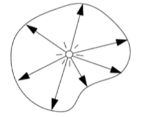
角和立体角：
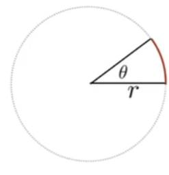
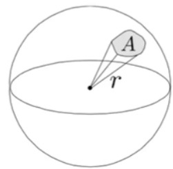
角angle:
- ratio of subtended arc length
- $\theta = \frac{l}{r}$
- circle has $2\pi$ radians
立体角solid angle:
- ration of subtended area on sphere to radius squared
- $\Omega = \frac{A}{r^2}$
- sphere has $4\pi$ steradians
单位立体角：单位面积/半径平方
微分立体角differential solid angles：
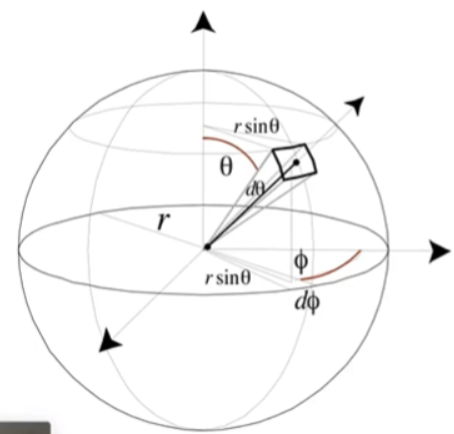
- $dA=(rd\theta)(r \sin\theta \ d\phi) = r^2\sin\theta \ d\theta \ d\phi$
- $dw = \frac{dA}{r^2} = \sin \theta \ d \theta \ d \phi$
对于球面模型，intensity的计算：（不会衰减）
$\Phi = \int_{S^2} I d\omega = 4 \pi I$
$I = \frac{\phi}{4\pi}$
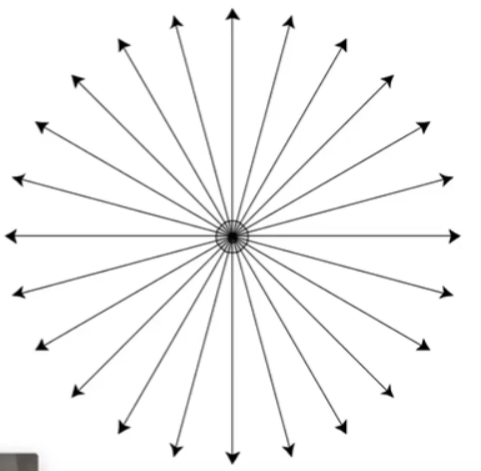
Irradiance
irradiance:
- the power per (perpendicular/projected) unit area incident on a surface point 是单位面积上（投影的）的能量
- denoted by$E(x)\equiv \frac{d\Phi(x)}{dA}$ $[\frac{W}{m^2}] [\frac{lm}{m^2}=lux]$
- total power received by area dA
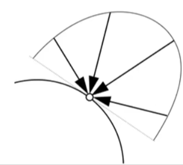
与光线垂直的表面的面积（与面法线和光线的夹角有关），会（随半径）衰减

Radiance
radiance
- the power emitted, reflected, trasmitted or received by a surface, per unit solid angle, per projected unit area 在单位立体角且在单位面积上的（发射的、反射的、传递的、吸收的）能量
- $L(p,\omega) \equiv \frac{d^2\Phi(p, \omega)}{d\omega\ dA \cos \theta} \quad [\frac{W}{sr \ m^2}][\frac{cd}{m^2}=\frac{lm}{sr\ m^2}=nit]$
- is the quantity associated with a ray
- power received by area dA from “direction” dw
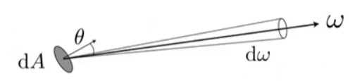
radiance 与 irradiance 和 intensity 的关系：
- irradiance：power per projected unit area
- intensity: power per solid angle
- radiance: irradiance per solid angle
- radiance: intensity per projected unit area
BRDF(Bidirectional Reflectance Distribution Function)
定义某个能量在每个方向上反射的能量如何分配
输入入射角，出射角，入射能量，返回出射能量
反射的理解：光线打到某个物体表面被吸收，从某个方向发射出去
具体地，从某个方向 dwi 来的radiance 打到 dA，被表面吸收(irradiance)，从另一个方向 w 发射出去(radiance

BRDF:
- represent how much light is reflected into each outgoing direction$w_r$from each incoming direction
- $f_r(\omega_i \rightarrow \omega_r) = \frac{dL_r(\omega_r)}{dE_i(\omega_i)} = \frac{dL_r(\omega_r)}{L_i(\omega_i)\cos\theta_i d\omega_i}\quad[\frac{1}{sr}]$
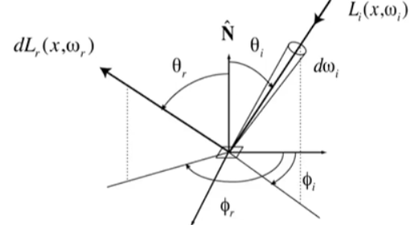
递归反射，任何出射的radiance都可能作为其他点入射的radiance
Rendering Equation 渲染方程
the rendering equation:
- $L_o(p, \omega_o) = L_e(p, \omega_o) + \int_{\Omega^+} L_i(p, \omega_i) f_r(p, \omega_i, \omega_o)(n\cdot \omega_i)d\omega_i$
- 这里假设所有的方向都是从点向外的方向
- 自己发射的光+其他光源反射的光
the Reflection Equation
对所有的点光源求和，包括面光源
- $L_r(x, \omega_r) = L_e(x, \omega_r) + \int_{\Omega} L_i(x, \omega_i) f(x, \omega_i, \omega_r) \cos\theta_i d\omega_i$
- reflected light = emission + incident light(from light source) BRDF cosine of incident angle
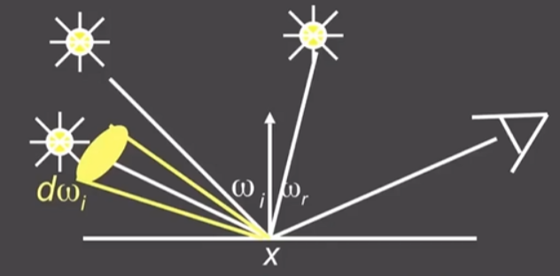
包括反射的物体：
- $L_r(x, \omega_r) = L_e(x, \omega_r) + \int_{\Omega} L_r(x^`, -\omega_i) f(x, \omega_i, \omega_r) \cos\theta_i d\omega_i$
- reflected light = emission + reflected light BRDF cosine of incident
简写的渲染方程：
- $I(u)=e(u)+\int I(v) K(u, v) dv$
- K 为 kernel of equation (light transport operator)
进一步简写：
- $L=E+KL$
- can be discretized to a simple matrix equation (or system of simultaneous linear equations)
- L, E是向量，K是light transport matrix
扩展：
general class numerical MonteCarlo methods
approximate set of all paths of light in scene
$\begin{aligned}
L &= E+KL \\
IL - kL &= E \\
(I-K)L &= E \\
L &= (I-K)^{-1} E
\end{aligned}$写为二项式
$\begin{aligned}
L &=(I+K+K^2+K^3+\cdots)E \\
L &=E+KE+K^2E+K^3E+\cdots
\end{aligned}$
全局光照 = 光源发射的直接光照+表面上的直接光照+间接光照（一次弹射）+二次反射+……
而光栅化渲染只能包括光源发射的直接光照和表面上的直接光照
概率论复习
Probability Distribution Function（PDF）概率分布函数
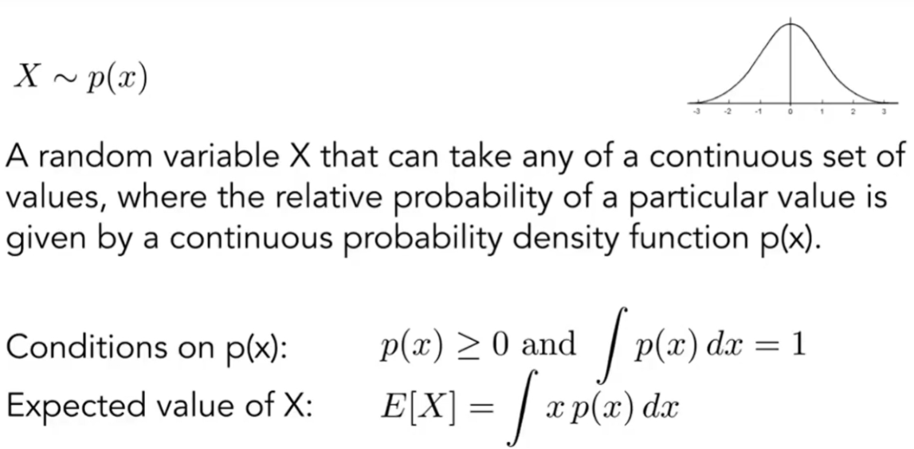
Monte Carlo Integration
why: we want to solve an integral, but it can be too difficult to solve analytically
how: estimate the integral of a function by averaging random samples of the function’s value
monte carlo estimator: $\int f(x)dx = \frac{1}{N} \sum_{i=1}^N \frac{f(X_i)}{p(X_i)} \quad X_i \sim p(x)$
- the more samples, the less variance
- sample on x, integrate on x
在积分域内不断采样，得到对应点的函数值，将其看为一常数，则将该积分化为求一矩形面积，高度为该函数值，长度为b-a，将n个采样结果相加求平均，n越大，则结果越接近实际值
例子：uniform 分布的随机变量
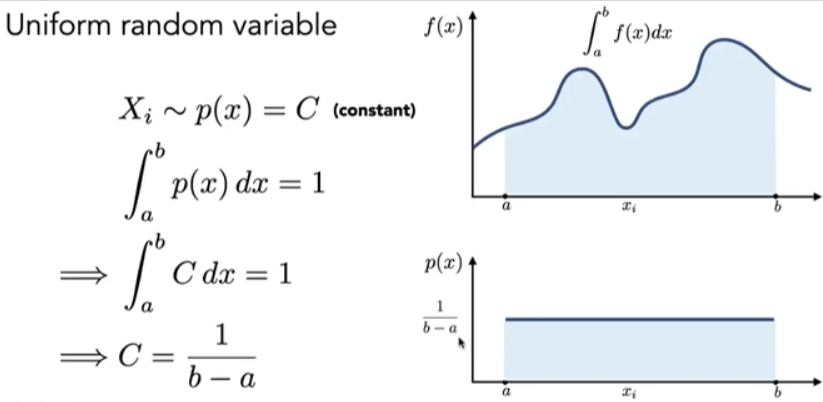
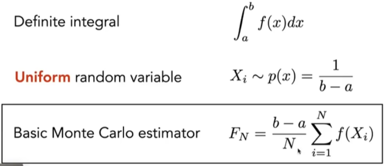
Path Tracing
whitted-style ray tracing:
- always perfom specular reflections / refractions
- stop bouncing at diffuse surfaces
这样的简化是错误的，存在的问题：
- no glossy reflection
- no reflections between diffuse materials
Direct Illumination: a simple Monte Carlo solution
计算p点向camera的radiance：假设shading point p不发光，则该点的radiance即为球面上各个方向的光乘以BRDF项之后再反射到观察方向上的积分，如下：
$L_o(p, \omega_o) = \int_{\Omega^+} L_i(p, \omega_i) f_r(p, \omega_i, \omega_o)(n\cdot \omega_i)d\omega_i$
运用Monte Carlo 积分：$\int f(x)dx \approx \frac{1}{N} \sum_{i=1}^N \frac{f(X_i)}{p(X_i)} \quad X_i \sim p(x)$
这里：
- f(x)为：$L_i(p, \omega_i) f_r(p, \omega_i, \omega_o)(n\cdot \omega_i)$
- pdf为：$p(\omega_i) = \frac{1}{2\pi}$，这里假设为半球上的uniform采样
整合后有：
$\begin{aligned}
L_o(p, \omega_o) &= \int_{\Omega^+} L_i(p, \omega_i) f_r(p, \omega_i, \omega_o)(n\cdot \omega_i)d\omega_i \\
&= \frac{1}{N} \sum_{i=1}^{N} \frac{L_i(p, \omega_i) f_r(p, \omega_i, \omega_o)(n\cdot \omega_i)}{p(\omega_i)}
\end{aligned}$
shader伪代码：
1 | shade(p, wo) |
Global Illumination
如果光线打到了其他物体，考虑从与物体的交点到shading point的radiance
shader 伪代码：（递归算法）
1 | shade(p, wo) |
存在的问题：
- explosion of #ray as #bounces go up:
- 因为单个光源发射出N条光线，整个场景中的光线会成指数爆炸增长，只有当N为1时，不会指数爆炸
- 因此修改之前的方法，假设每个shading point只跟踪一根光线（路径追踪）
1 | shade(p, wo) |
但是这样做噪声很大，因此，对同一个像素点，trace多个paths，将每一个path得到的radiance求和平均，即为该像素点的radiance
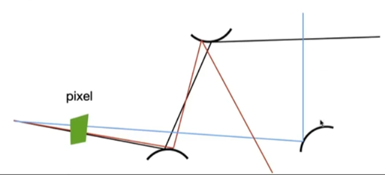
Ray Generation:
1 | ray_generation(camPos, pixel) |
但此时仍然存在问题，因为代码中存在递归，但是当前的递归代码没有停止条件（事实上，光线也应该无数次弹射 ）
Russian Roulette
为了解决光线不能无数次弹射（停止条件）的问题之前，我们总数会在shading point发射光线，得到shading结果Lo假设设置一个概率P(0<P<1)，以P的概率发射一条光线，返回着色结果除以P：Lo/P，而1-P的概率不会发射光线
这样，最后radiance的期望还是Lo：$E=P(\frac{Lo}{P}) + (1-P)0 = Lo$
1 | shade(p, wo) |
但此时算法的效率仍然不高，因为均匀地采样时，绝大多数的光线都被浪费了：
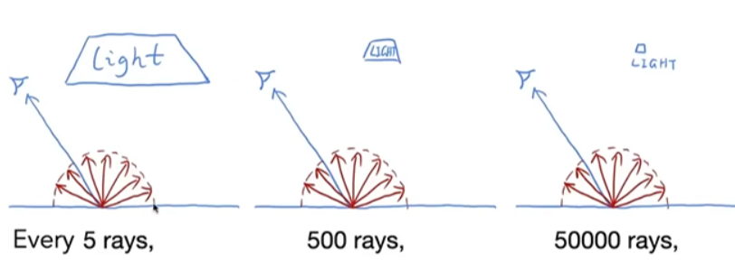
为了提高效率，我们可以修改成采样光源，避免光线的浪费
但是这样又出现了一个问题，Monte Carlo算法本身的积分是取样在球面上的
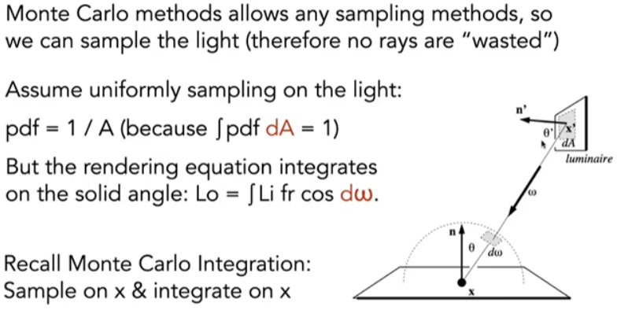
因此需要将渲染方程修改为dA的积分，而不是dω的积分
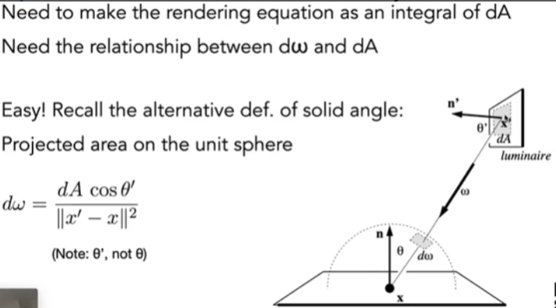
即可得如下图所示的式子
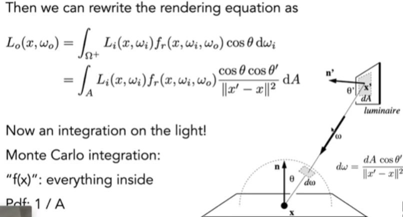
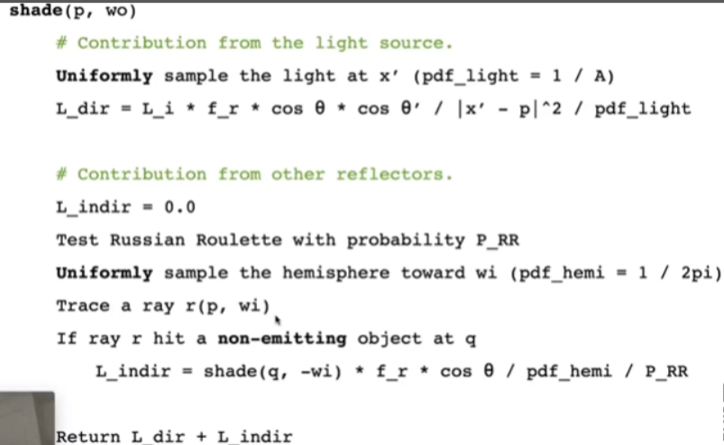
在最后，在进行一次优化，由于在光源上采样，所以如果从光源上发出的光线在路径上碰到了其他的物体，则不需要再进行之后的计算
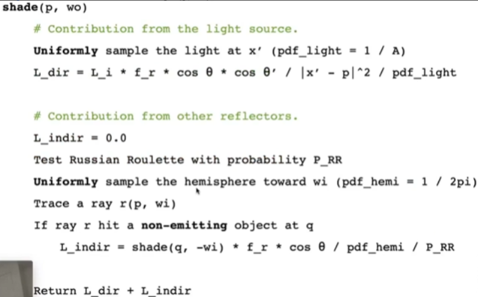
点光源不好进行路径追踪，可以将其做成一个小面积的面积光源仍需自己去了解的东西：
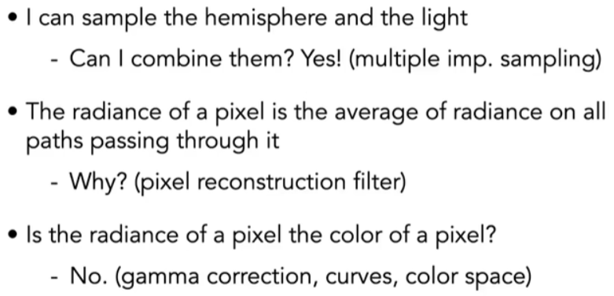
The Appearance of Natural Materials（外观与材质）

Materials
Material == BRDF
Diffuse/Lambertian Material（漫反射材质）

Glossy Material（光滑材质）
Ideal Reflective/Refractive Material(理想全反射材质)
出射光方向+入射光方向 = 法线方向

Specular Refraction

当ηi > ηt且使得$(η_i/η_t)^2*（1-cos^2θ）> 1$，则发生全反射

Fresnel Reflection/Term（菲涅尔项）
表示有多少能量被反射
Dielectric（绝缘体）

Conductor（导体）

菲涅尔项的计算方法

但是计算过于复杂，我们将其近似
Schlick’s approximation

Microfacet Material(微表面材质)
从远处看到的是材质，从近处看到的是几何形体
在微表面材质中，我们将表面视作有大量的小镜子

用其表面的法线分布来表示不同的材质

F(i,h)：Fresnel term，表示被反射的能量总量
G(i,i,h)：shadowing-masking term，为了修正入射角过大，导致出现相互遮挡的现象
D(h)：distribution of normals，表示表面法线的分布

Isotropic/Anisotropic Materials(BRDFs)（各向同性/各向异性材质）
当满足如下条件时，为各向异性材质

BRDF的属性
BRDF是非负的

BRDF为线性的，可以拆分开再相加

BRDF的可逆性，交换入射方向和出射方向，得到的BRDF相同

BRDF不会使能量变化，能量守恒

各向同性材质可以看作是三维的

测量BRDF
枚举所有的入射和出射角度，测量BRDF

可以提高效率的地方：
各向同性的曲面将尺寸从4D减少到3D
通过BRDF的可逆性，将测量数量减少了一半
Clever optical systems
对于BRDF的存储，理想的情况为：
紧凑精简的表示
准确表示测量数据
对任意方向的有效评估
可用于重要性抽样的良好分布
Advanced Topics in Rendering
Advanced Light Transport
首先要解释unbiased(无偏的)和biased(有偏的)Monte Carlo Estimators，unbiased Monte Carlo技术不会造成任何系统误差，无论使用多少个样本，无偏估计量的期望值都将始终是正确值，除此之外都属于有偏。
在有偏的情况下，有一种特殊情况，当使用接近无穷多个样本时，期望值收敛到了正确值，这种情况仍然还是有偏的，但是我们将其称为consistent(一致的)。
一种对于渲染bias更简单的理解是：
Biased == blurry(模糊)
Consistent == not blurry with infinite #samples(在无穷多个样本时不模糊)
Unbiased light transport methods
Bidirectional path tracing(BDPT)双向路径追踪
跟踪摄像机和灯光的子路径
连接子路径的端点
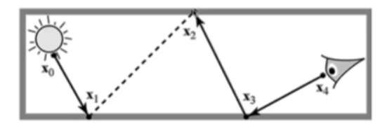
如果在光的侧面光传输很复杂，则适用
但是难以实施且相当缓慢
Metropolis light transport(MLT)
Markov Chain Monte Carlo(MCMC) 方法
要注意，当采样的PDF和要积分的函数形状一致时，效果最佳
所以该方法实际上就是使用一些PDF从当前样本跳转到下一个样本
该方法擅长在局部探索困难的光路，它在局部对现有路径进行一些扰动以获得新的路径
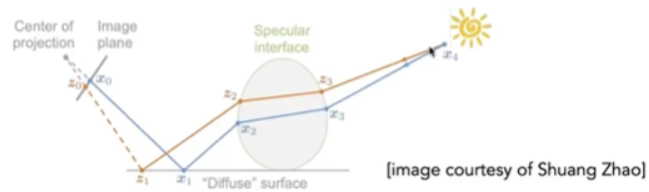
特别适合做复杂的光线传播，同样也是无偏的
缺点：
难以估计收敛速度
所有操作都是局部的，不能保证每个像素的收敛速度相同，所以经常得到比较”dirty”的结果(如下图所示)，所以经常不用于渲染动画
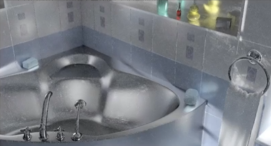
Biased light transport methods
Photon mapping(光子映射)
这是一种有偏的且为two-stage的方法
非常适合处理Specular-Diffuse-Specular(SDS)路径并生成caustics
Stage1-photon tracing
从光源发出光子，将它们进行多次弹射，直到碰到diffuse表面时停止并记录光子
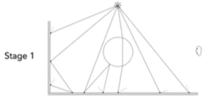
Stage2-photon collection(final gathering)
从相机子路径发射，将它们进行多次弹射，直到碰到diffuse表面时停止
分布更多光子的区域应该更亮，所以我们就来计算local density estimation(局部的密度估计)对于每一个shading point，去找到距离它最近的N个光子，并得到它们占据的面积，之后将光子数量N/面积即为local density estimation
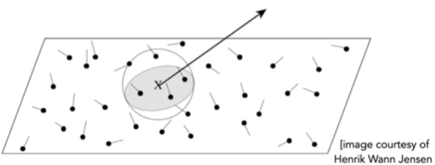
但是为什么会是有偏的呢，实际上我们计算local density estimation，应该在当前点周围取一个微小的面积dA，来计算光子密度，而我们是通过一定光子数所占的区域来求光子密度，即：$\frac{dN}{dA} \ne \frac{\Delta N}{\Delta A}$
但从某种意义来说，如果有更多的光子被辐射出去，那么光子的密度也就更大了，寻找同样N个光子所覆盖的区域面积也就更小了，此时ΔA就更接近dA，所以，biased but consistent
我们之所以不使用固定区域寻找光子数这种方法来计算光子密度，是因为这种方法得到的结果一定是有偏的，且面积不会变小，永远不等于正确值，也就不再是consistent的方法了
Vertex connection and merging(VCM)
是将BDPT和Photon Mapping结合起来
Key idea：如果端点不能连接但可以合并，则不要浪费BDPT中的子路径，通过使用photon mapping来处理临近“光子”的合并
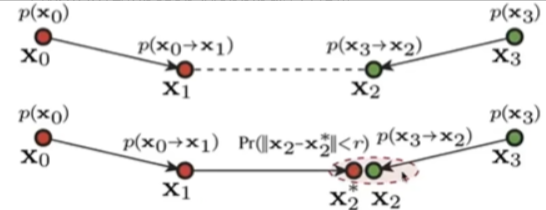
Instant radiosity(VPL/many light methods)(实时辐射度)
有时也称为many-light方法
Key idea：被照亮的表面可以视作新的光源
发射光源子路径，并假设每个子路径的终点是虚拟点光源(VPL)，并使用这些VPL照常渲染场景
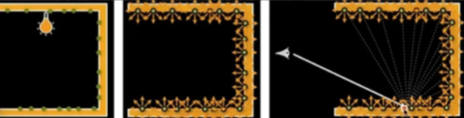
优点：
快速，并且对于diffuse的场景经常能够得出不错的结果
缺点：
VPL接近阴影点时会出现spikes
无法处理glossy的材质
Advanced Appearance Modeling
Non-surface models
Participating media(散射介质)
在光通过散射介质的任何时候，它都可以（部分）被吸收和散射
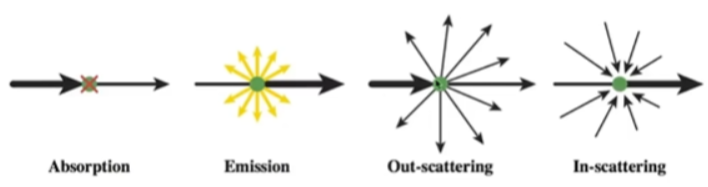
使用Phase Function(相位函数)描述参与介质内任意点x处的光散射角分布
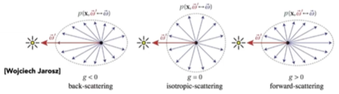
随机选择反弹的方向
随机选择一个距离直走
在每个“shading point”，连接到光源
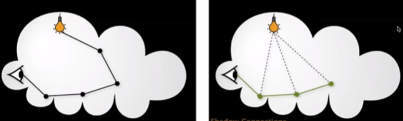
Hair/fur/fiber(BCSDF)
Hair Appearance Model
Marschner Model
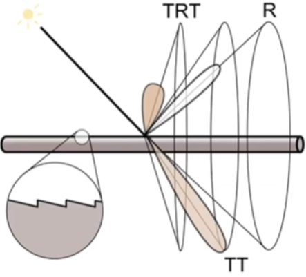
该模型将头发看作类似于玻璃的圆柱体，考虑了三种光线的作用关系：R，TT，TRT
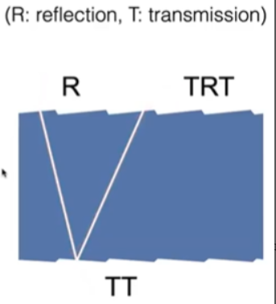
Fur Appearance
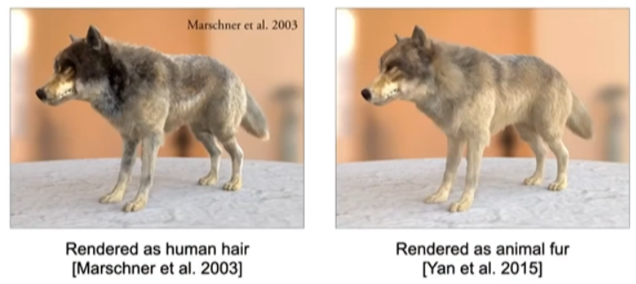
对比动物毛发与人的头发，都有Cuticle，Medulla，Cortex，但区别是动物的Medulla要粗很多，而Medulla可以散射光线，因此在模拟动物毛发时，需要考虑模拟Medulla
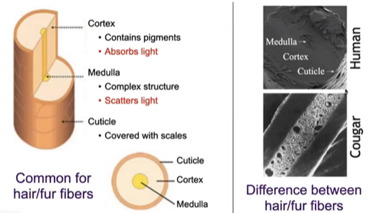
因此提出了Double Cylinder Model，将Medulla精准地描述出来
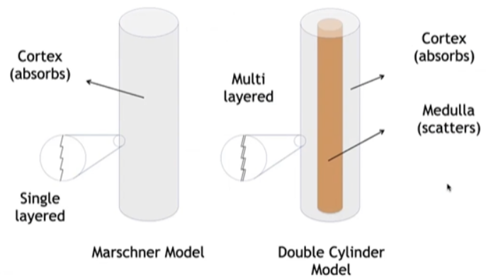
所以在Double Cylinder Model中需要考虑R,TT,TRT,TTs,TRTs这五种光线作用关系
Granular material(颗粒材质)
当目前为止并没有得到非常好的解决
Surface models
ranslucent material(BSSRDF)(半透明材质)
Subsurface Scattering(次表面散射)
光在与入射不同点处出射所导致的许多表面的视觉特征，违反BRDF的基本假设
BSSRDF是BRDF的泛化； 由一点的入射irradiance，另一个点处的出射radiance
$S(x_i,\omega_i,x_o,\omega_o)$参数分别表示入射点，入射方向，出射点，出射方向
渲染方程同样也要进行延申扩展，整合表面上所有点和所有方向
$L(x_o,\omega_o)=\int_{A}^{}\int_{H^2}^{}S(x_i,\omega_i,x_o,\omega_o)L_i(x_i,\omega_i)cos\theta_id\omega_idA$
通过引入两个点光源进行近似的光扩散，当光线打在一个点时，就像该点下方出现了一个点光源，来照射周围地区域，但为了表现更真实的效果，需要在上方也引入一个虚拟光源，两个光源一同照射的效果就比较接近真实的BSSRDF，这种方法被称为Dipole Approximation
Cloth
布料是由一系列缠绕着的纤维(fiber)构成，通过多根纤维的缠绕形成股(ply)，多根股缠绕会形成线(yarn)，之后通过woven或是knitted成布料
布料的渲染有三种方式：
①物体表面：给定编制的方式，从而来计算布料的整体行为，可以使用BRDF来渲染
②散射介质：单根纤维的性质及其分布转化为散射参数，将布料视作为散射介质来渲染
③实际纤维：如若知道其编制方式，也可以明确地渲染每一根纤维
Detailed material(non-statistical BRDF)
在微表面模型中，我们用非常简单的模型来描述法线分布，但是这种模型过于理想化，与我们所希望得到的真实效果整体趋势一致，但有一定的差别
困难点在于无论是从光源还是摄像机发射，打在微表面模型上即可知道法线分布，但是并不能打到彼此的视角上，因此我们考虑一个像素能够覆盖很多微表面，将这个区域内的法线分布计算出来，来替代之前我们所近似运用的简单模型
当考虑的微表面足够小时，就需要考虑波动光学，而不能只考虑简单的几何光学，得到的BRDF结果有相似的地方，但是也有波动光学独特的地方，是不连续的，原因是考虑波动光学，会产生干涉现象，部分区域加强，部分区域减弱，从而产生了不连续的效果
Procedural appearance
动态地计算噪声函数(noise function)，并不生成材质，而是随用随取，需要用到时输入noise(x,y,z)用噪声函数进行计算查询
3D noise -> 内部结构是否被切割或折断
阈值化（noise->binary noise）
1 | if noise(x,y,z)>threshold: |
Imaging
imaging = synthesis+capture
相机的构造
shutter(快门)为sensor(传感器)精确地曝光
sensor(传感器)在曝光过程中累积irradiance
每个sensor点将对物体上所有点的光线进行积分，因此像素值将相似
即sensor记录irradiance
Field of View(FOV)
焦距对FOV的影响
对于固定的传感器尺寸，减小焦距可增加视野
$FOV=2arctan(\frac{h}{2f})$
由于历史原因，通常使用35mm格式胶片上使用的镜头焦距来指称视角
当我们说当前的手机具有大约28mm的“等效”焦距时，这使用了以上约定
传感器的大小同样也对FOV有着关键作用，越大的传感器对应的FOV越大
当只能使用小型传感器时，为了保持FOV，与传感器的宽度/高度成比例地减小镜头的焦距
Exposure
H = T × E
Exposure = time × irradiance
Exposure time(T)由快门决定，Irradiance(E)是落在传感器单位面积上的光的功率，由镜头光圈和焦距控制
Aperture size
通过改变f-stop来打开/关闭光圈从而改变光圈大小（如果相机具有光圈控制）
Shutter speed
更改传感器像素整合光的持续时间
motion blur：handshake ,subject movement
快门时间决定了光可以进入相机的时间，快门时间越长，光进入相机的时间越长，而最终成像的结果为平均效果，所以快门时间加倍，运动模糊加倍
由于开门打开需要一定的时间，会产生Rolling shutter现象，相机中不同位置的地方记录的不同时间的光，从而造成图像的扭曲
ISO gain(感光度)
在传感器值和数字图像值之间更改放大（模拟and/or数字信号），相当于后期处理
曝光的第三个变量
film:trade sensitivity for grain
digital:trade sensitivity for noise
在模数转换之前将信号相乘
线性效果（ISO 200需要的光是ISO 100的一半）
F-Number(F-Stop):Exposure Levels
f-number 写作FN 或是 F/N
可以非正式地理解为1/光圈直径
这对光圈和快门速度可提供相等的曝光
如果曝光太亮/太暗，则可能需要调整f-stop 和/或 shutter up/down
摄影师必须权衡景深和运动主体的运动模糊
High-Speed Photography
正常曝光=极快的快门速度 ×（大光圈 和/或 高ISO）
Long-Exposure Photography
Thin Lens Approximation
我们研究的是理想化的薄透镜
所有进入透镜的平行光线都通过其焦点
穿过透镜后，所有通过焦点的光线将平行
焦距可以任意改变
The Thin Lens Equation
$\frac{1}{f}=\frac{1}{z_i}+\frac{1}{z_o}$
推导：
$\frac{h_o}{z_o-f}=\frac{h_i}{f}$ $\frac{h_o}{f}=\frac{h_i}{z_i-f}$
将上两个式子做一个整理得到:
$\frac{h_o}{h_i}=\frac{z_o-f}{f}$ $\frac{h_o}{h_i}=\frac{f}{z_i-f}$
联立可得：
$\frac{z_o-f}{f}=\frac{f}{z_i-f}$
接着推得Gaussian Thin Lens Equation
$\begin{split}
(z_o-f)(z_i-f)&=f^2\\
z_oz_i-(z_o+z_i)f+f^2&=f^2\\
z_oz_i&=(z_o+z_i)f\\
\frac{1}{f}&=\frac{1}{z_i}+\frac{1}{z_o}
\end{split}$
Defocus Blur
Circle of Confusion(CoC)
产生的原因是因为一个点成像在Sensor Plane上成了一个圈
circle of confusion与光圈大小成正比
$\frac{C}{A}=\frac{d’}{z_i}=\frac{|z_s-z_i|}{z_i}$
重新回到F-number
给它一个正式的定义：
透镜的F-number为焦距除以光圈直径
因此可以进一步得出CoC的大小与F-stop成反比
$C=A\frac{d’}{z_i}=\frac{f}{N}\frac{|z_s-z_i|}{z_i}$
Ray Tracing Ideal Thin Lenses
Setup：
①选择感光元件的大小，镜头的焦距和光圈的大小
②选择透镜距离物体的深度$z_o$，即物距，再根据薄透镜方程计算传感器$z_i$的相应深度
Rendering：
①在感光元件上找一个点x’
②随即在透镜上选一个点x’’
③通过薄透镜公式，可以知道穿过透镜的光线将撞击x’’’
④计算在光线x’’->x’’’上的radiance
Depth of Field
景深指的是成像清晰的一段范围
将CoC设置为图像平面上的最大允许模糊点，该模糊点在最终查看条件下会变得清晰
即场景中的深度范围，其对应的CoC足够小
最终得到的DOF结果为：
$DOF = \frac{D_Sf^2}{f^2-NC(D_S-f)}-\frac{D_Sf^2}{f^2+NC(D_S-f)}$
Light Field/Lumigraph(光场)
The Plenoptic Function(全光函数)
即为我们所能看到的所有事物
整一个视觉的世界，是一个七个维度的函数$P(\theta,\phi,\lambda,t,V_X,V_Y,V_Z)$
$\theta 和 \phi$决定了视角的方向
λ决定了波长，即转化为彩色的时间
t决定了时间
$V_X,V_Y,V_Z$决定了观察点的空间位置
该函数可以随时随地从每个位置，每个波长重建每个可能的视图
Ray
不考虑颜色和时间，可以通过五个维度来定义一条光线$P(\theta,\phi,V_X,V_Y,V_Z)$
我们也可以通过两个点和光线的正负方向确定一条光线，即2D的方向和2D的位置
而光场就是任何一个位置往任何一个方向光的强度，在3D场景中，类似于纹理映射，我们用u,v就可以表示物体表面的位置，用θ和Φ就可以表示观察方向，所以在场景中的任意一条光线，我们都能通过光场知道光的强度
我们可以通过两个平行的平面，在上面分别取两个点得到一条光线，确定该光线的光强，从而将光场参数化
Light Field Camera
使用小透镜的空间多路复用光场捕获：
在空间分辨率和角度分辨率之间施加固定的权衡
通过lenslet这些小的透镜，将原本打在像素上的各个方向上的光分别记录在sensor的不同位置，本质上来说，记录的不再是一个像素的irradiance，而是往不同方向上看到的radiance
光场照相机的原理就是这样，它支持在拍摄照片之后动态调焦
现在将每个像素（irradiance）存储为一个像素块（radiance）
那么如何将光场照相机拍摄出来的照片还原为一张普通的照片呢
可以始终在每个块的某一个部位选择像素，也就相当于可以虚拟地移动摄像机的位置
而动态调焦的原理也是一样的，视觉上改变焦距，相应地选择重新聚焦的射线方向
总而言之，所有这些功能都是可用的，因为光场包含了一切可能性
但是光场同样存在问题：
①空间分辨率不足（用于空间和方向信息的胶片相同，而需要更多容量存储一个像素的信息）
②成本高（复杂的微透镜）
所以说计算机图形学是要权衡的
Physical Basis of Color
颜色是人类感知的现象； 它不是光的普遍属性，不同波长的光不是“颜色”
The Visible Spectrum of Light
电磁辐射
不同频率（波长）的振荡
SPD具有线性性质，多种光结合起来的SPD即它们分别的SPD之和
Biological Basis of Color
瞳孔是光圈，晶状体是透镜，视网膜是感光元件
Retinal Photoreceptor Cells:Rods and Cones
棒状细胞rods是非常弱的光线（“暗视”条件）下的主要受体
约有1.2亿根rods
仅感知灰色阴影，无颜色
视锥细胞cones是典型光照水平下的主要受体（“明视”）
眼中约6-7百万个cones
cones分为三种类型S,M,L，每种cone有不同的光谱灵敏度，对应于短，中和长波长的峰值响应提供色彩感
这些细胞的分布个体差异很大
Tristimulus Theory of Color
现在我们有了三种感色细胞(S,M,L cone cells)，每一种都有不同的光谱响应曲线
$S=\int_{}^{}r_S(\lambda)s(\lambda)d\lambda$ $M=\int_{}^{}r_M(\lambda)s(\lambda)d\lambda$ $L=\int_{}^{}r_L(\lambda)s(\lambda)d\lambda$
其中的s(λ)是某一光线的谱功率密度在入处采样的值
人眼无法测量，大脑不会接收有关每个波长的光的信息
相反，眼睛仅“看到”三个响应值（S，M，L），这仅是大脑可用的信息
Metamerism(同色异谱)
Metamers是投射到相同(S,M,L)响应的两个不同光谱,这些看起来对人类来说具有相同的颜色
Metamers的存在对颜色再现至关重要
不必重现真实世界的所有场景
例如：Metamers可以在只有三种颜色的像素的显示器上再现真实世界场景的感知颜色
Color Reproduction/Matching
Additive Color
给定一组主光源，每个主光源都有自己的光谱分布（例如R，G，B显示像素）
$S_R(\lambda)，S_G(\lambda)，S_B(\lambda)$
调整这些光的亮度并将它们加在一起
$RS_R(\lambda)+GS_G(\lambda)B*S_B(\lambda)$
现在用标量值描述颜色
$R,G,B$
CIE RGB Color Matching Experiment
与以前的加色匹配相同的设置，但是原色是单色光（单波长）
该图绘制了每种CIE RGB主光必须组合多少才能匹配x轴上给定波长的单色光
对于任何光谱s，感知的颜色均与以下公式进行匹配，以缩放CIE RGB原色
$R_{CIERGB}=\int_{\lambda}^{}s(\lambda)\bar{r}(\lambda)d\lambda$ $G_{CIERGB}=\int_{\lambda}^{}s(\lambda)\bar{g}(\lambda)d\lambda$ $B_{CIERGB}=\int_{\lambda}^{}s(\lambda)\bar{b}(\lambda)d\lambda$
Color Space
标准化RGB
使特定的显示器RGB标准
其他色彩设备通过校准来模拟该监视器
如今被广泛采用
色域有限
A Universal Color Space: CIE XYZ
虚构的标准色原色X，Y，Z
具有这些匹配功能的原色不存在
Y是亮度（与颜色无关的亮度）
设计成：
匹配功能严格为正
涵盖所有可观察的颜色
Separating Luminance, Chromaticity
亮度：Y
色度：$x = \frac{X}{X+Y+Z}$ $y = \frac{Y}{X+Y+Z}$ $z = \frac{Z}{X+Y+Z}$
由于x + y + z = 1，我们只需要记录三个中的两个
通常选择x和y，以特定的亮度Y计算（x，y）坐标
色域(即上图)是由一组原色生成的色度集
不同的颜色空间代表不同的颜色范围
因此它们具有不同的色域，即它们覆盖了色度图上的不同区域
Perceptually Organized Color Spaces
HSV Color Space(Hue-Saturation-Value)
颜色拾取器
Hue(色调)
颜色的“种类”，与属性无关
colorimetric correlate：dominant wavelength
artist’s correlate: the chosen pigment color
Saturation(饱和度)
“色彩”
colorimetric correlate：purity
artist’s correlate: fraction of paint from the colored tube
Lightness(or value)(亮度)
整体光量
colorimetric correlate：luminance
artist’s correlate: tints are lighter,shades are darker
CIELAB Space(AKA Lab*)
力求感知均匀性的常用色彩空间
L*是亮度
a*和b*是颜色对，a*是红-绿，b*是蓝-黄
在相向而行的轴两端是互补色
人眼在上时间看一个颜色后，突然变白，会自动补充互补色
CMYK：A Subtractive Color Space
减色模型
混合的越多，颜色越深
Cyan,Magenta,Yellow ,and Key
广泛应用于打印
可以运用C,M,Y混合得到K，但是这样成本过高，直接制作黑色墨水成本比较低
Animation
图形学中的动画是建模的扩展，是将场景模型表示为时间的函数
输出：依次查看的图像序列，从而提供运动感
电影：每秒24帧
影片（一般）：30fps
虚拟现实：90 fps
Keyframe animation(关键帧动画)
动画师（例如首席动画师）创建关键帧
助手（人或计算机）创建中间帧
Keyframe Interpolation
将每帧视为参数值的向量
线性插值往往效果不够好
调用样条曲线进行平滑/可控制的插值
Physical simulation(物理模拟)
通过数值模拟生成对象的运动
Mass Spring System(质量弹簧系统)
质点弹簧系统是相互连接的一系列质点和弹簧
$f_{a\rightarrow b}=k_S(b-a)$ $f_{b\rightarrow a}=-f_{a\rightarrow b}$
用力将点拉在一起
与位移成正比的强度（胡克定律）
$k_S$是弹簧系数：刚度
但弹簧是有原长的，所以可以得到以下公式
$f_{a\rightarrow b}=k_S\frac{b-a}{||b-a||}(||b-a||-l)$，其中l为原长
但是仍存在问题，因为能量守恒，所以这个弹簧会一直振动下去，所以要引入摩擦力
如果x是一个位置的矢量，我们将使用点符号表示速度和加速度$x,\dot{x}=v,\ddot{x}=a$
简单的运动阻尼
$f=-k_d\dot{b}$
表现得像粘性拖曳运动
减慢速度方向的运动
$k_d$是阻尼系数
但这会使减慢所有运动
仅阻尼内部弹簧驱动的运动
$f_b=-k_d{\color{red}\frac{b-a}{||b-a||}(\dot{b}-\dot{a})}\cdot {\color{blue}\frac{b-a}{||b-a||}}$
红色部分为：相对速度投影到从a到b的方向（标量）
$\dot{b}-\dot{a}$假设a为静态（矢量），b的相对速度
蓝色部分：从a到b的方向
粘性阻力仅在弹簧长度变化时，不会减慢弹簧系统的组运动（例如，组的全局平移或旋转）
这只是阻尼的特定类型
弹簧可以组成各种各样的结构，行为由结构链接决定，如下图，
但是存在问题，以网格模拟纸张为例
这种结构不会抗拒切变
这种结构不会抵抗平面外弯曲
因此我们做出这样的改进
这种结构会抗拒切变，但并不对称，因此再进一步得到
但是这些还是无法解决沿着横纵折叠的问题，将每一对相隔一个的点都用一个新的弹簧连接，得到
其中红色的弹簧弹性应该非常弱
除此之外也有拿FEM(Finite Element Method)(有限元方法)来替代质点弹簧
Particle Systems
将动力学系统建模为大量粒子的集合，每个粒子的运动由一组物理（或非物理）力定义
这是图形和游戏中的流行技术，原因如下：
①易于理解，实施
②可扩展：更少的粒子可以提高速度，更多的粒子可以提高复杂度
存在的问题：
①可能需要大量的粒子(例如液体)
②可能需要加速结构（例如，寻找相互作用的最近粒子）
实现方法：
对于动画中的每一帧
①如果需要，创建新的粒子
②计算每个粒子上的力
③更新每个粒子的位置和速度
④如果需要，清除死亡的粒子
⑤渲染粒子
因此是先模拟，再渲染，两者是分开的
粒子系统中的力
①吸引力和排斥：
重力，电磁
弹力，动力
②阻尼力：
摩擦，空气阻力，粘滞力
③碰撞力：
墙壁，容器，固定物体，
动态物体，角色身体部位
粒子系统还可以模拟群体中的个体，例如鸟群中的鸟，也可以用简单的力来描述，例如：
①每一只鸟都会朝鸟群的中心移动，不希望脱离鸟群，因此会有一个朝向中心的吸引力
②每一只鸟都不希望离任何一只鸟过于近，所以每只鸟之间存在一个斥力
③每一只鸟会考虑周围鸟群飞行的平均方向，从而改变自己的朝向
Single Particle Simulation
首先研究单个粒子的运动，之后再推广为许多粒子
首先，假设由速度矢量场确定的质点运动是位置和时间的函数v(x,t)
计算粒子随时间的位置需要求解一阶常微分方程：$\frac{dx}{dt}=\dot{x}=v(x,t)$
“First-order”是指采用一阶导数
“Ordinary”表示没有偏导数，即x只是t的函数
通过使用正向数值积分，我们可以在给定的初始粒子位置x0的情况下求解ODE
欧拉法（又称前向欧拉，显式欧拉），它是常用的简单迭代方法，很不准确，经常会变得不稳定
$x^{t+\Delta t}=x^t+\Delta t\dot{x}^t$
$\dot{x}^{t+\Delta t}=\dot{x}^t+\Delta t\ddot{x}^t$
欧拉法的误差随着数值积分，不断地累积，Euler integration特别糟糕
当我们缩小每一步的步长，即Δt时，欧拉法会变得更准确，误差更小
欧拉法的两个核心问题：
①误差随着时间步长Δt的增加而增加，但精度在图形应用中可能并不那么重要
②不稳定是一个常见的严重问题，可能导致仿真产生分歧，缺乏稳定性是仿真中的一个基本问题，不能忽略
Rigid Body Simulation
类似于模拟一个粒子
只是考虑更多的属性
Fluid Simulation
假设水由小的刚体球组成，假设水不能被压缩（即密度为常值）
因此，只要密度在某处变化，就应该通过更改粒子的位置对其进行“校正”
为此，我们需要知道关于每个小球位置上的密度梯度，再通过梯度下降法进行更新
Eulerian vs. Lagrangian
两种模拟大型物质收集的不同方法
Lagrangian approach质点法
跟踪每一个个体的移动轨迹
Eulerian approach网格法
固定观察的网格，观察不同时段上该网格经过的物体
Material Point Method(MPM)
Hybrid，结合了Eulerian和Lagrangian
Lagrangian：考虑携带材料特性的颗粒
Eulerian：使用网格进行数值积分
结合：粒子将属性传输到网格，网格执行更新，然后插值回粒子Kinematics(运动学)
铰接式骨骼
拓扑（什么连接到什么）
关节的几何关系
树状结构（无循环）
骨骼的关节右三种类型：
①Pin(1D rotation)
②Ball(2D rotation)
③Prismatic joint(translation)
动画师确定角度，然后计算机确定末端执行器的位置p
Kinematics Pros and Cons
优点：
直接控制方便
实现很简单
缺点：
动画可能与物理学不一致
对艺术家来说很耗时
Inverse Kinematics(逆运动学)
动画家提供末端执行器的位置，计算机必须确定满足约束的关节角度
direct inverse kinematics：对于两段臂，可以解析地求解参数
$\theta_2=cos^{-1}(\frac{p^2_z+p^2_x-l^2_1-l^2_2}{2l_1l_2})$
$\theta_1=\frac{-p_zl_2sin(\theta_2)+p_x(l_1+l_2cos(\theta_2))}{p_xl_2sin(\theta_2)+p_z(l_1+l_2cos(\theta_2))}$
逆运动学的困难在于，运动的解决方案可能并不唯一，也可能没有解
一般N链接IK问题的数值解
选择初始配置
定义误差度量（例如目标和当前位置之间的距离的平方）
根据配置计算误差梯度
应用梯度下降（或牛顿法，或其他优化程序）
Rigging
Rigging是角色上的一组高级控件，可以更快速，直观地修改姿势，形变，表情等。
像木偶上的弦，捕获所有有意义的人物改动，因角色而异
Rigging是在一个物体不同的位置设置不同的控制点，从而对物体进行控制
但Rigging很难制作，是体力劳动，需要艺术和技术培训
Blend Shapes
代替骨骼，直接在曲面之间进行插值，定义两个关键帧，中间的过渡部分插值计算得到
例如，建模一个面部表情集合：
最简单的方案：采用顶点位置的线性组合
样条曲线，用于随着时间的推移控制权重的选择
Motion Capture(动作捕捉)
数据驱动的动画序列创建方法
记录现实世界的表演（例如，执行某项活动的人）
从收集的数据中提取姿势作为时间的函数
Pros:
可以快速捕获大量真实数据
真实度很高
Cons:
复杂而昂贵的设置
捕获的动画可能无法满足艺术需求，需要进行更改
Motion Capture得到的类似于下图的数据，其中记录了每一个控制点在某一时间的位置
Unicanny valley(恐怖谷效应)
在机器人技术和图形学方面
当人造角色的外观逼近人类的真实性时，我们的情感反应就会变得消极，直到达到足够令人信服的真实性表达水平为止
电影制作流程
Combating Instability
Midpoint method/Modified Euler(中点法)
按原本的欧拉方法计算得到点a，但并不用a点，而是取起点与a点的中点b，计算中点b处的导数即速度，用b点的速度重新回到起点进行欧拉法的计算，达到c点
$\begin{split}x_{mid}&=x(t)+\frac{\Delta t}{2}\cdot v(x(t),t)\\x(t+\Delta t)&=x(t)+\Delta t\cdot v(x_{mid},t)\end{split}$
这样改良的欧拉方法将每一步的起点与终点的速度求平均，从而得到了更好的结果
$x^{t+\Delta t}=x^t+\frac{\Delta t}{2}(\dot{x}^t+\dot{x}^{t+\Delta t})$
$\dot{x}^{t+\Delta t}=\dot{x}^t+\Delta t\ddot{x}^t$
联立得：
$x^{t+\Delta t}=x^t+\Delta t\dot{x}^t+\frac{(\Delta t)^2}{2}\ddot{x}^t$
Adaptive step size(自适应改变步长)
误差估计的步长选择技术，非常实用的技术，但可能需要很小的step
首先用显示欧拉法计算Xt，步长T，再通过两次显示欧拉计算Xt/2，步长T/2
再计算误差||Xt-Xt/2||，如果该误差大于阈值，则进一步减小步长再进行同样的计算，直到误差小于阈值，算法停止
Implicit methods(隐式方法)
非正式地称为后向欧拉法，在当前步骤中，使用将来的数值
$x^{t+\Delta t}=x^t+\Delta t\dot{x}^{t+\Delta t}$
$\dot{x}^{t+\Delta t}=\dot{x}^t+\Delta t\ddot{x}^{t+\Delta t}$
解决的非线性问题，提供更好的稳定性，使用寻根算法，例如牛顿法，
那么我们很自然地想到，怎么去定义一个方法的稳定性呢？
我们使用局部截断误差(每步)/总累积误差(总体) 这样一个值来判断方法的稳定性
隐式Euler的阶数为1，这意味着：
局部截断误差为$O(h^2)O(h)$(h 是步长，即Δt)
其中O(h)的含义是，如果将h减半，那么得到的误差也将减半($O(h^2)$即降至1/4，以此类推)
Runge-Kutta Families
一系列解决ODE的高级方法，尤其擅长处理非线性问题，四阶版本是使用最广泛的版本，被称为RK4
初始条件：$\frac{dy}{dt}=f(t,y),\ \ \ \ \ y(t_0)=y_0$
RK4方法：$\begin{split}&y_{n+1}=y_n+\frac{1}{6}h(k_1+2k_2+2k_3+k_4)\\&t_{n+1}=t_n+h\end{split}$
其中：$k_1=f(t_n,y_n),k2=f(t_n+\frac{h}{2},y_n+h\frac{k_1}{2}),k_3=f(t_n+\frac{h}{2},y_n+h\frac{k_2}{2}),k4=f(t_n+h,y_n+hk_3)$
Position-based/Verlet integration
经过改进的欧拉前移后，限制粒子的位置以防止出现发散，不稳定的行为
使用受约束的位置来计算速度
这两个想法都会耗散能量，稳定性
Pros/Cons
快速且简单，但并不是基于物理的，会耗散能量(错误的)